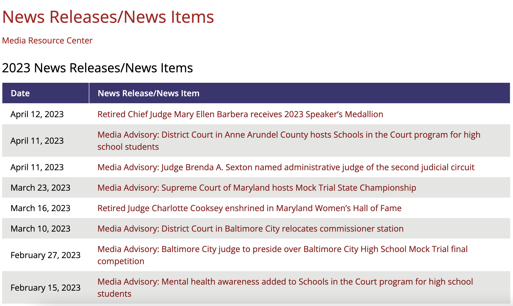
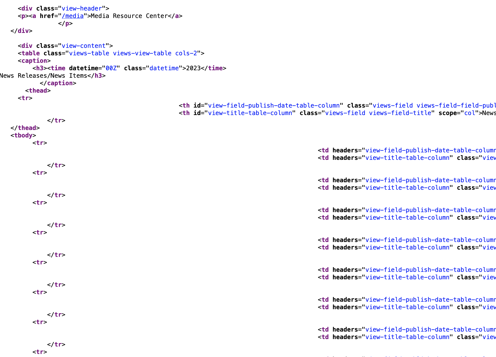
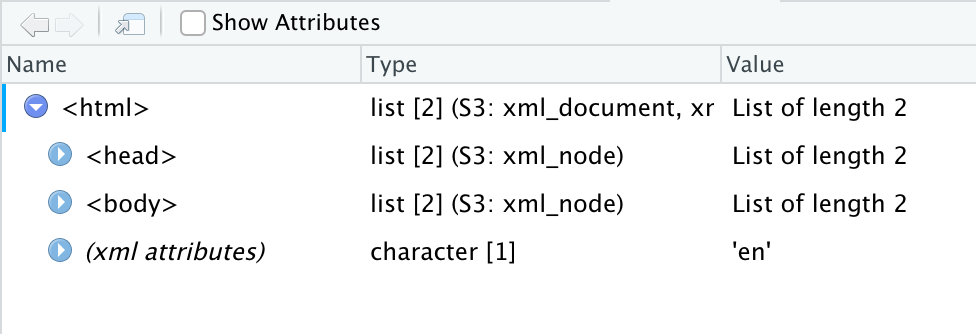

library(rvest)
library(tidyverse)
library(lubridate)
library(janitor)30 Scraping data with Rvest
Sometimes, governments put data online on a page or in a searchable database. And when you ask them for a copy of the data underneath the website, they say no.
Why? Because they have a website. That’s it. That’s their reason. They say they don’t have to give you the data because they’ve already given you the data, never mind that they haven’t given to you in a form you can actually load into R with ease.
Lucky for us, there’s a way for us to write code to get data even when an agency hasn’t made it easy: webscraping.
One of the most powerful tools you can learn as a data journalist is how to scrape data from the web. Scraping is the process of programming a computer to act like a human that opens a web browser, goes to a website, ingests the HTML from that website into R and turns it into data.
The degree of difficulty here goes from “Easy” to “So Hard You Want To Throw Your Laptop Out A Window.” And the curve between the two can be steep. You can learn how to scrape “Easy” in a day. The hard ones take a little more time, but it’s often well worth the effort because it lets you get stories you couldn’t get without it.
In this chapter, we’ll show you an easy one. And in the next chapter, we’ll so you a moderately harder one.
Let’s start easy.
We’re going to use a library called rvest, which you can install it the same way we’ve done all installs: go to the console and install.packages("rvest").
Like so many R package names, rvest is a bad pun. You’re supposed to read it to sound like “harvest”, as in “harvesting” information from a website the same way you’d harvest crops in a field.
We’ll load these packages first:
For this example, we’re going to work on loading a simple table of press releases from the Maryland State Courts.
Let’s suppose we can’t find a table like that for download, but we do see a version on the website at this URL: https://www.courts.state.md.us/media/news.

We could get this table into R with the following manual steps: highlighting the text, copying it into Excel, saving it as a csv, and reading it into R. Or, we could write a few lines of webscraping code to have R do that for us!
In this simple example, it’s probably faster to do it manually than have R do it for us. But during the time when ballots are being counted, this table is likely to change, and we don’t want to keep doing manual repetitive tasks.
Why would we ever write code to grab a single table? There’s several reasons:
- Our methods are transparent. If a colleague wants to run our code from scratch to factcheck our work, they don’t need to repeat the manual steps, which are harder to document than writing code.
- Let’s suppose we wanted to grab the same table every day, to monitor for changes. Writing a script once, and pressing a single button every day is going to be much more efficient than doing this manually every day.
- If we’re doing it manually, we’re more likely to make a mistake, like maybe failing to copy every row from the whole table.
- It’s good practice to prepare us to do more complex scraping jobs. As we’ll see in the next chapter, if we ever want to grab the same table from hundreds of pages, writing code is much faster and easier than going to a hundred different pages ourselves and downloading data.
So, to scrape, the first thing we need to do is start with the URL. Let’s store it as an object called ag_url.
courts_url <- "https://www.courts.state.md.us/media/news"When we go to the web page, we can see a nicely-designed page that contains our information.
But what we really care about, for our purposes, is the html code that creates that page.
In our web browser, if we right-click anywhere on the page and select “view source” from the popup menu, we can see the source code. Or you can just copy this into Google Chrome: view-source:https://www.courts.state.md.us/media/news.
Here’s a picture of what some of the source code looks like.

We’ll use those HTML tags – things like <table> and <tr> – to grab the info we need.
Okay, step 1.
Let’s write a bit of code to tell R to go to the URL for the page and ingest all of that HTML code. In the code below, we’re starting with our URL and using the read_html() function from rvest to ingest all of the page html, storing it as an object called results.
# read in the html
results <- courts_url |>
read_html()
# display the html below
results{html_document}
<html lang="en" dir="ltr" prefix="content: http://purl.org/rss/1.0/modules/content/ dc: http://purl.org/dc/terms/ foaf: http://xmlns.com/foaf/0.1/ og: http://ogp.me/ns# rdfs: http://www.w3.org/2000/01/rdf-schema# schema: http://schema.org/ sioc: http://rdfs.org/sioc/ns# sioct: http://rdfs.org/sioc/types# skos: http://www.w3.org/2004/02/skos/core# xsd: http://www.w3.org/2001/XMLSchema# ">
[1] <head>\n<meta http-equiv="Content-Type" content="text/html; charset=UTF-8 ...
[2] <body class="path-media no-sidebars">\n <a href="#main-content" cl ...If you’re running this code in R Studio, in our environment window at right, you’ll see results as a “list of 2”.
This is not a dataframe, it’s a different type of data structure a “nested list.”
If we click on the name “results” in our environment window, we can see that it’s pulled in the html and shown us the general page structure. Nested within the <html> tag is the <head> and <body>, the two fundamental sections of most web pages. We’re going to pull information out of the <body> tag in a bit.

Now, our task is to just pull out the section of the html that contains the information we need.
But which part do we need from that mess of html code? To figure that out, we can go back to the page in a web browser like chrome, and use built in developer tools to “inspect” the html code underlying the page.
On the page, find the data we want to grab and right click on the word “Date” in the column header of the table. That will bring up a dropdown menu. Select “Inspect”, which will pop up a window called the “element inspector” that shows us where different elements on the page are located, what html tags created those elements, and other info.

The table that we want is actually contained inside an html <table>. It has a <tbody> that contains one row <tr> per release.
Because it’s inside of a table, and not some other kind of element (like a <div>), rvest has a special function for easily extracting and converting html tables, called html_table(). This function extracts all the html tables on the page, but this page only has one so we’re good.
# read in the html and extract all the tables
results <- courts_url |>
read_html() |>
html_table()
# show the dataframe
results[[1]]
# A tibble: 41 × 2
Date `News Release/News Item`
<chr> <chr>
1 December 22, 2024 Maryland courts, court offices, and administrative offices…
2 December 20, 2024 Legionella Bacteria Detected in Baltimore City Circuit and…
3 December 11, 2024 Maryland Judiciary Honors Student Winners of 19th Annual C…
4 December 11, 2024 Media Advisory: District Court in Anne Arundel County offe…
5 December 10, 2024 Media Advisory: District Court in Prince George’s County o…
6 December 2, 2024 Media Advisory: Anne Arundel County District Court celebra…
7 December 2, 2024 Media Advisory: Maryland Judiciary announces winners of th…
8 November 20, 2024 Media Advisory: National Adoption Day celebrations hosted …
9 November 20, 2024 Judge Joseph M. Stanalonis named administrative judge for …
10 November 20, 2024 Senior Judge Alan M. Wilner retires as chair of the Stand…
# ℹ 31 more rows
[[2]]
# A tibble: 37 × 2
Date `News Release/News Item`
<chr> <chr>
1 December 28, 2023 Maryland Judiciary launches E-rent program statewide
2 December 20, 2023 Student winners of the Maryland Judiciary's 18th Annual Co…
3 December 5, 2023 Media Advisory: Maryland Judiciary announces winners of th…
4 November 22, 2023 Retired Baltimore Ravens Wide Receiver Torrey Smith celebr…
5 November 15, 2023 Media Advisory: Circuit courts in Maryland host National A…
6 November 9, 2023 Media Advisory: Baltimore City District Court Veterans Tre…
7 November 7, 2023 Maryland Judiciary launches E-rent program in Prince Georg…
8 November 3, 2023 Supreme Court of Maryland holds oral arguments at Dr. Henr…
9 October 30, 2023 Media Advisory: Baltimore City District Court Re-Entry Pro…
10 October 26, 2023 Maryland Judiciary issues statement after suspect in the m…
# ℹ 27 more rows
[[3]]
# A tibble: 48 × 2
Date `News Release/News Item`
<chr> <chr>
1 December 20, 2022 Media Advisory: Supreme Court of Maryland to hold open mee…
2 December 14, 2022 Voter-approved constitutional change renames high courts t…
3 December 7, 2022 Student winners of the Maryland Judiciary's 17th Annual Co…
4 December 7, 2022 Retired Baltimore Ravens Wide Receiver Jermaine Lewis cele…
5 December 6, 2022 Media Advisory: Judge DaNeeka Varner Cotton named administ…
6 December 2, 2022 Media Advisory: Winners to be announced for Maryland Judic…
7 November 22, 2022 Media Advisory: Baltimore City District Court Re-Entry Pro…
8 November 17, 2022 New La Plata Court Help Center opens in Charles County
9 November 16, 2022 Media Advisory: Circuit courts in Maryland host in-person …
10 November 10, 2022 Media Advisory: Baltimore City District Court Veterans Tre…
# ℹ 38 more rows
[[4]]
# A tibble: 46 × 2
Date `News Release/News Item`
<chr> <chr>
1 December 27, 2021 Maryland Judiciary reverts operations to Phase III in resp…
2 December 22, 2021 Small fire at the Circuit Court for Talbot County causes t…
3 December 15, 2021 Media Advisory: District Court in Anne Arundel County will…
4 December 10, 2021 New Rockville District Court Help Center is already making…
5 December 9, 2021 Chief Judge Joseph M. Getty congratulates student winners …
6 December 8, 2021 Media Advisory: Grand opening celebration of the District …
7 December 8, 2021 Media Advisory: Winners announced for Maryland Judiciary’s…
8 November 17, 2021 Media Advisory: For a second year, circuit courts in Maryl…
9 November 15, 2021 Media Advisory: Baltimore City Veterans Treatment Court ce…
10 November 1, 2021 Maryland lawyers donate 1.03 million hours of legal servic…
# ℹ 36 more rows
[[5]]
# A tibble: 67 × 2
Date `News Release/News Item`
<chr> <chr>
1 December 22, 2020 The Maryland Judiciary extends Phase II operations through…
2 December 21, 2020 Maryland courts, court offices, and administrative offices…
3 November 24, 2020 Maryland Judiciary restricts operations to Phase II in res…
4 November 18, 2020 Media Advisory: Circuit courts in Maryland prepare for vir…
5 November 16, 2020 Media Advisory: Circuit Court for Montgomery County to hon…
6 November 13, 2020 Judge Ruth A. Jakubowski named circuit and county administ…
7 November 13, 2020 Judge Sherri D. Koch named District Administrative Judge f…
8 November 12, 2020 Maryland Judiciary restricts operations to Phase III in re…
9 November 5, 2020 Somerset County Circuit Court holds its first Adult Recove…
10 November 5, 2020 Baltimore County Family Recovery Support Program celebrate…
# ℹ 57 more rows
[[6]]
# A tibble: 53 × 2
Date `News Release/News Item`
<chr> <chr>
1 December 20, 2019 Maryland courts, court offices, and administrative offices…
2 December 11, 2019 Circuit Court for Washington County reduces trial jury ser…
3 December 6, 2019 Maryland Judiciary hosts young winners of 14th Annual Conf…
4 December 5, 2019 Media Advisory: District Court to hold Schools in the Cour…
5 December 4, 2019 Media Advisory: Baltimore City District Court Adult Drug T…
6 December 2, 2019 Media Advisory: Anne Arundel County District Court to hono…
7 December 2, 2019 Media Advisory: Winners announced for Maryland Judiciary’s…
8 November 18, 2019 Towson District Courthouse scheduled to move to new Catons…
9 November 18, 2019 Media Advisory: Circuit courts in Maryland celebrate adopt…
10 November 13, 2019 Media Advisory: Maryland’s highest court to welcome studen…
# ℹ 43 more rows
[[7]]
# A tibble: 82 × 2
Date `News Release/News Item`
<chr> <chr>
1 December 26, 2018 New court rules refine court processes regarding guardians…
2 December 20, 2018 Courts, court offices, and court administrative offices wi…
3 December 18, 2018 New Maryland Rules shift pro bono and IOLTA reporting for …
4 December 14, 2018 Scheduled website maintenance
5 December 12, 2018 Media Advisory: Anne Arundel County District Court to hono…
6 December 11, 2018 Maryland lawyers donate 1.16 million hours of legal servic…
7 December 10, 2018 Media Advisory: Maryland Judiciary hosts participants from…
8 December 4, 2018 Suzanne C. Johnson named clerk of the Maryland Court of Ap…
9 December 3, 2018 Media Advisory: Courts, court offices, and administrative …
10 November 28, 2018 Media Advisory: District Court to hold Schools in the Cour…
# ℹ 72 more rows
[[8]]
# A tibble: 77 × 2
Date `News Release/News Item`
<chr> <chr>
1 December 21, 2017 New court rules regarding guardianships of vulnerable Mary…
2 December 21, 2017 Judiciary Honors Students for Promoting Peace Through Artw…
3 December 15, 2017 Baltimore City District Court Honors Re-Entry Project Grad…
4 December 14, 2017 Court of Appeals Hosts Youth Conference
5 December 8, 2017 Phase II of construction on Robert C. Murphy Courts of App…
6 December 5, 2017 Court of Appeals Hosts United States Naval Academy Midship…
7 December 5, 2017 Judicial Data Center Outage - Thursday, December 7, 2017
8 November 30, 2017 Pretrial Pilot Program to Launch in Baltimore County
9 November 29, 2017 Maryland Judiciary Hosts Oratorical Contest for Youths fro…
10 November 28, 2017 Media Advisory: Maryland Judiciary Hosts Students Who Help…
# ℹ 67 more rows
[[9]]
# A tibble: 59 × 2
Date `News Release/News Item`
<chr> <chr>
1 December 16, 2016 Judges Mentor Students in Civics
2 December 15, 2016 Judiciary Honors Young Artists for Promoting Peace
3 December 12, 2016 Maryland Judiciary Expands MDEC and Electronic Filing to L…
4 December 9, 2016 Media Advisory: Maryland’s Chief Judge Congratulates Youn…
5 December 8, 2016 Marilyn Bentley Named Clerk of Baltimore City Circuit Court
6 December 8, 2016 Judges to Mentor Washington County Students on Civics
7 December 8, 2016 Judges Mentor Students on Civics
8 December 1, 2016 New Email Scam Targets Attorneys
9 November 23, 2016 Media Advisory: Judges to Mentor Montgomery County Student…
10 November 21, 2016 Judge Brett W. Wilson Named First Judicial Circuit Adminis…
# ℹ 49 more rows
[[10]]
# A tibble: 64 × 2
Date `News Release/News Item`
<chr> <chr>
1 December 28, 2015 Media Advisory:Pre-Trial Proceedings Begin for State of Ma…
2 December 22, 2015 Media Advisory: New Trial Date Scheduled for State of Mary…
3 December 21, 2015 Chief Judge Honors Young Artists for Peace
4 December 15, 2015 New Rules Concerning Briefs Filed in Maryland’s Appellate …
5 December 9, 2015 New Mobile App Improves Access to Justice
6 December 1, 2015 Media Advisory:Jury Selection Continues and Trial Begins f…
7 November 25, 2015 Media Advisory: Judges Bring Civics to Carroll County Stud…
8 November 23, 2015 Jury Selection for State of Maryland v. William Porter on …
9 November 20, 2015 Petition for Expungement of Records (CC-DC-CR-072) - Revis…
10 November 19, 2015 Media Advisory:Pre-Trial Motions Hearing for State of Mary…
# ℹ 54 more rows
[[11]]
# A tibble: 50 × 2
Date `News Release/News Item`
<chr> <chr>
1 December 23, 2014 Judge Charles J. Peters to Head Baltimore Circuit Court’s …
2 December 9, 2014 Baltimore City District Court Celebrates Newest Drug Treat…
3 December 5, 2014 Media Advisory:District Court of Maryland’s Towson Courth…
4 November 25, 2014 Judiciary Warns Public to Beware of “Court” Scams
5 November 24, 2014 Judges Help Bring Civics to Charles County High School Stu…
6 November 14, 2014 Young Artists Honored for Peace-making Efforts
7 November 12, 2014 Media Advisory: Maryland Judiciary Hosts Youths from DJS F…
8 November 10, 2014 Media Advisory: Judiciary Holds Reception to Honor Young A…
9 November 7, 2014 Media Advisory: Anne Arundel County Circuit Court Address …
10 November 7, 2014 Media Advisory: Circuit Courts in Maryland Celebrate “Happ…
# ℹ 40 more rows
[[12]]
# A tibble: 26 × 2
Date `News Release/News Item`
<chr> <chr>
1 December 30, 2013 Media Advisory: Judiciary Warns of False “Court Case” Emai…
2 December 27, 2013 Judge Althea M. Handy Heads Civil Docket for Baltimore Cit…
3 December 17, 2013 Media Advisory: Judiciary Helps Bring Civics to Baltimore …
4 December 12, 2013 Harford County Courts Visited by Maryland’s Chief Judge
5 December 11, 2013 Cecil County Courts Welcome Maryland’s Chief Judge
6 December 4, 2013 Maryland’s New Chief Judge Visits Prince George’s County D…
7 December 4, 2013 Maryland’s New Chief Judge Visits Charles County Courts
8 December 2, 2013 State Task Force Begins Study of Civil Right to Counsel fo…
9 November 18, 2013 Media Advisory: Circuit Courts in Maryland Celebrate Natio…
10 November 18, 2013 Media Advisory: Maryland Judiciary Hosts Youths from DJS F…
# ℹ 16 more rows
[[13]]
# A tibble: 1 × 2
Date `News Release/News Item`
<chr> <chr>
1 October 13, 0023 Media Advisory: Circuit Court for Baltimore City’s Adult Dru…In the environment window at right, look at results Note that it’s now a “list of 11”.
This gets a little complicated, but what you’re seeing here is a nested list that contains one data frame – also called tibbles – one for each table that exists on the web page we scraped. There are tables for each year on the page, so we have 11 years’ worth of press releases.
Let’s say we are interested in 2023, so all we need to do now is to store that first dataframe as an object. We can do that with this code, which says “keep only the first dataframe from our nested list.”
# Read in all html from table, store all tables on page as nested list of dataframes.
results <- courts_url |>
read_html() |>
html_table()
# Just keep the first dataframe in our list
results <- results[[1]]
# show the dataframe
results# A tibble: 41 × 2
Date `News Release/News Item`
<chr> <chr>
1 December 22, 2024 Maryland courts, court offices, and administrative offices…
2 December 20, 2024 Legionella Bacteria Detected in Baltimore City Circuit and…
3 December 11, 2024 Maryland Judiciary Honors Student Winners of 19th Annual C…
4 December 11, 2024 Media Advisory: District Court in Anne Arundel County offe…
5 December 10, 2024 Media Advisory: District Court in Prince George’s County o…
6 December 2, 2024 Media Advisory: Anne Arundel County District Court celebra…
7 December 2, 2024 Media Advisory: Maryland Judiciary announces winners of th…
8 November 20, 2024 Media Advisory: National Adoption Day celebrations hosted …
9 November 20, 2024 Judge Joseph M. Stanalonis named administrative judge for …
10 November 20, 2024 Senior Judge Alan M. Wilner retires as chair of the Stand…
# ℹ 31 more rowsWe now have a proper dataframe, albeit with some lengthy column headers.
From here, we can do a little cleaning. First we’ll use clean_names() to lower the column names. Then use rename() to replace the title column with a simpler version and properly format the date.
# Read in all html from table, get the HTML table.
results <- courts_url |>
read_html() |>
html_table()
# Standardize column headers, remove last row
results <- results[[1]] |>
clean_names() |>
rename(title = news_release_news_item) |>
mutate(date = mdy(date))
# show the dataframe
results# A tibble: 41 × 2
date title
<date> <chr>
1 2024-12-22 Maryland courts, court offices, and administrative offices will b…
2 2024-12-20 Legionella Bacteria Detected in Baltimore City Circuit and Distri…
3 2024-12-11 Maryland Judiciary Honors Student Winners of 19th Annual Conflict…
4 2024-12-11 Media Advisory: District Court in Anne Arundel County offers Scho…
5 2024-12-10 Media Advisory: District Court in Prince George’s County offers S…
6 2024-12-02 Media Advisory: Anne Arundel County District Court celebrates its…
7 2024-12-02 Media Advisory: Maryland Judiciary announces winners of the 19th …
8 2024-11-20 Media Advisory: National Adoption Day celebrations hosted by Mary…
9 2024-11-20 Judge Joseph M. Stanalonis named administrative judge for St. Mar…
10 2024-11-20 Senior Judge Alan M. Wilner retires as chair of the Standing Com…
# ℹ 31 more rowsAnd there we go. We now have a nice tidy dataframe of Maryland state court press releases. We could combine all 11 dataframes if we wanted to have the whole set.
What about HTML that doesn’t have a table? Well, that’s where things get a bit more complicated, and rely on your ability to read HTML and identify particular elements of it.
Let’s consider the list of press releases from the little-known but fascinating Office of the State Prosecutor: https://osp.maryland.gov/press-releases/. Let’s save that URL as a variable as we did above:
osp_url <- "https://osp.maryland.gov/press-releases/"The next step is similar to before, too, except this time we’re not going to call html_table() because there are no tables here that we want. In order to find what we want, we’ll need to right-click on the first release date and choose “Inspect”.
One reason that we use HTML elements like ul and li is to help organize the code and make it easier to maintain. But it also helps with scraping, because we can zero in on the elements we want. Let’s start by reading it in:
osp_results <- osp_url |>
read_html()
# show the result
osp_results{html_document}
<html lang="en-US">
[1] <head>\n<meta http-equiv="Content-Type" content="text/html; charset=UTF-8 ...
[2] <body><div class="container">\n <div class="skipNav">\n ...Once again we get a list of two as our result. In this case, we don’t want to isolate the first item in our list. Instead, we want to try to locate all of the li tags inside this HTML. Since the li tag is an HTML element, we use the function html_elements() to get them. If we only wanted a single element, we’d use html_element():
osp_results |> html_elements('li'){xml_nodeset (85)}
[1] <li>\n<a href="https://www.facebook.com/OSPMD/" class="sm-facebook" titl ...
[2] <li>\n<a href="https://twitter.com/#!/@OSP_MD" class="sm-twitter" title= ...
[3] <li>\n<a href="https://www.instagram.com/osp_md/" class="sm-instagram2" ...
[4] <li><a href="https://www.linkedin.com/company/office-of-the-maryland-sta ...
[5] <li id="menu-item-565" class="menu-item menu-item-type-custom menu-item- ...
[6] <li id="menu-item-561" class="menu-item menu-item-type-custom menu-item- ...
[7] <li id="menu-item-1954" class="menu-item menu-item-type-post_type menu-i ...
[8] <li id="menu-item-150" class="menu-item menu-item-type-custom menu-item- ...
[9] <li id="menu-item-1919" class="menu-item menu-item-type-post_type menu-i ...
[10] <li id="menu-item-1382" class="menu-item menu-item-type-post_type menu-i ...
[11] <li id="menu-item-564" class="menu-item menu-item-type-post_type menu-it ...
[12] <li id="menu-item-1363" class="menu-item menu-item-type-custom menu-item ...
[13] <li id="menu-item-566" class="menu-item menu-item-type-custom menu-item- ...
[14] <li id="menu-item-1378" class="menu-item menu-item-type-custom menu-item ...
[15] <li id="menu-item-1379" class="menu-item menu-item-type-custom menu-item ...
[16] <li id="menu-item-1380" class="menu-item menu-item-type-custom menu-item ...
[17] <li class="listing-item"><a class="title" href="https://osp.maryland.gov ...
[18] <li class="listing-item"><a class="title" href="https://osp.maryland.gov ...
[19] <li class="listing-item"><a class="title" href="https://osp.maryland.gov ...
[20] <li class="listing-item"><a class="title" href="https://osp.maryland.gov ...
...Good news and bad news here: we have all of the
tags, but we have lots of them, and it’s hard to see if we have the right ones. Let’s see what we’re dealing with and just look at the text inside the
tags. To do that, we add html_text() to the end of the last code block:
osp_results |> html_elements('li') |> html_text() [1] "Facebook "
[2] "Twitter "
[3] "Instagram "
[4] "LinkedIn"
[5] "Home"
[6] "Leadership"
[7] "FILE A COMPLAINT"
[8] "Press Releases"
[9] "Social Media"
[10] "Careers"
[11] "Contact Us"
[12] "OSP Annual Reports"
[13] "Maryland Judiciary Case Search"
[14] "State Board of Elections"
[15] "State Ethics Commission"
[16] "Attorney Grievance Commission"
[17] "December 13, 2024 – Orphan’s Court Judge Indicted for Illegal Recording and Misconduct in Office"
[18] "November 13, 2024: Former Prince George’s County Council Member Jamel “Mel” Franklin Sentenced to Jail for Felony Theft and Perjury."
[19] "November 1, 2024: Easton Police Department Officer Sentenced to Jail on Two Counts of Misconduct in Office"
[20] "September 11, 2024: Easton Police Department Officer Convicted of Two Charges of Misconduct in Office"
[21] "August 26, 2024: Former Prince George’s County Council Member Pleads Guilty to Felony Theft Scheme and Perjury"
[22] "July 18, 2024: Former Anne Arundel County Register of Wills Sentenced for Misconduct in Office"
[23] "June 20, 2024: Prince George’s County Councilman Charged with Multiple Counts of Felony Theft Scheme, Embezzlement, and Perjury"
[24] "June 4, 2024: Anne Arundel County Register of Wills Pleads Guilty to Misconduct in Office"
[25] "April 4, 2024: Easton Police Department Officer Charged with Misconduct in Office"
[26] "April 3, 2024: John King for Governor Campaign Cited for Authority Line Violations"
[27] "January 26, 2024: Anne Arundel County Register of Wills Charged with Misconduct in Office, Misappropriation by a Fiduciary, and Theft"
[28] "January 10, 2024: Former Cecil County Sheriff’s Deputy Sentenced to Prison for Misconduct in Office and Visual Surveillance with Prurient Intent"
[29] "November 9, 2023: Baltimore County Man Pleads Guilty to Voting in a Maryland Election without U.S. Citizenship"
[30] "October 12, 2023: 1776 Project PAC Fined Over $20,000 for Failure to Include Authority Line in Carroll County School Board Race"
[31] "October 11, 2023: Former Cecil County Sheriff’s Deputy Pleads Guilty to Misconduct in Office and Visual Surveillance with Prurient Intent"
[32] "October 05, 2023: Baltimore County Man Charged for Voting in a Maryland Election without U.S. Citizenship"
[33] "August 23, 2023: Cecil County Sheriff’s Office Deputy Charged with Misconduct in Office, Witness Retaliation, Revenge Porn, and Related Offenses"
[34] "July 31, 2023: Treasurer for Political Committees “Friends of Cathy Bevins” and the “Baltimore County Victory Slate” Sentenced to Six Months Incarceration"
[35] "May 25, 2023: Treasurer for Political Committees “Friends of Cathy Bevins” and the “Baltimore County Victory Slate” Pleads Guilty to Felony Theft Scheme and Perjury"
[36] "April 18, 2023: Former Baltimore City State’s Attorney Sentenced to Two Years in Federal Prison for Unlawfully Obtaining Phone Records"
[37] "April 13, 2023: Calvert County Sheriff’s Deputy Pleads Guilty To Misconduct In Office"
[38] "February 16, 2023: Treasurer to Political Committees “Friends of Cathy Bevins” and the “Baltimore County Victory Slate” Charged with Multiple Counts Of Felony Theft Scheme, Embezzlement, and Perjury"
[39] "January 13, 2023: Former Maryland State Delegate Richard K. Impallaria Pleads Guilty to Misconduct in Office for Misusing State Funds"
[40] "January 9, 2023: Calvert County Sheriff’s Deputy Charged with Misconduct in Office for Engaging in Sexual Relations with a Person Requesting Assistance"
[41] "December 9, 2022: Former Baltimore City Assistant State’s Attorney Pleads Guilty to Federal Charges For Unlawfully Obtaining Phone Records"
[42] "September 30, 2022: Former Baltimore City Assistant State’s Attorney Facing Federal Charges for Unlawfully Obtaining Phone Records"
[43] "September 29, 2022: Treasurer of Political Committee “Team 30 Slate” Pleads Guilty to Theft"
[44] "July 27, 2022: Delegate Richard Impallaria charged with Felony Theft and related crimes for schemes related to misuse of state funds"
[45] "May 4, 2022: Treasurer of Political Committee “Team 30 Slate” Charged with Theft of Campaign Funds"
[46] "April 18, 2022: Andrew Bradshaw, Former Mayor of Cambridge, MD, Pleads Guilty to Five Counts of Distributing Revenge Porn"
[47] "November 30, 2021: Former Baltimore City Homicide Prosecutor Indicted on 88 Charges, including Stalking, Extortion, and Misconduct in Office"
[48] "November 23, 2021: Fairmount Heights Police Officer Charged with Kidnapping, Perjury and Misconduct in Office"
[49] "November 15, 2021: Mayor of Cambridge Charged with violating Maryland’s Revenge Porn Statute"
[50] "October 26, 2021: Non-Profit CEO Sentenced to Two Years in Federal Prison after Pleading Guilty to Wire Fraud in Connection with the Misuse of Federal Funds Intended For The Treatment of Survivors of Domestic Violence and Sexual Assault"
[51] "October 5, 2021: Former Executive Director Of Maryland Environmental Service Facing Federal And State Charges For Allegedly Fraudulently Obtaining More Than $276,731 From His Employer, And State Felony Violations Of The Maryland Wiretap Statute"
[52] "September 23, 2021: Two Additional Baltimore Correctional Employees Plead Guilty, Making a Total of Eight Correctional Employees Convicted of Charges Related to Theft of over $400,000 Dollars of State Funds."
[53] "August 20, 2021: Ivan Gonzalez, Former Baltimore Police Officer and Candidate for Mayor of Baltimore City, Pleads Guilty to Perjury"
[54] "August 11, 2021: Baltimore Correctional Officer Pleads Guilty to Charges of Felony Theft and Misconduct in Office"
[55] "August 9, 2021: Edward M. Estes, former Mayor of the City of Glenarden, Pleads Guilty to Misconduct in Office"
[56] "July 30, 2021: Lora Walters, former Deputy Director of the Cecil County Board of Elections, Pleads Guilty to Misconduct in Office"
[57] "July 29, 2021: Baltimore Correctional Officers Plead Guilty to Charges of Felony Theft and Misconduct in Office"
[58] "July 26, 2021: Baltimore City Employee Pleads Guilty to Perjury"
[59] "July 9, 2021: Correctional Officer at Metropolitan Transition Center in Baltimore Pleads Guilty to Charges of Felony Theft and Misconduct in Office"
[60] "June 10, 2021: Five Correctional Officers charged with Felony Theft and Misconduct in Office"
[61] "June 4, 2021: Lora Walters, former Deputy Director of the Cecil County Board of Elections, charged with Misconduct in Office, Perjury, and other offenses."
[62] "March 29, 2021: Ivan Gonzalez, Baltimore Police Officer and Candidate for Mayor of Baltimore City, charged with Perjury and other crimes related to his 2020 Mayoral Campaign"
[63] "March 11, 2021: New Bank Fraud and Aggravated Identity Theft Charges Added to Non-Profit CEO’S Previous Federal Indictment Charging Her with Wire Fraud, Bank Fraud, and Aggravated Identity Theft"
[64] "January 15, 2021: Correctional Officers and State Employee Charged with Theft and Bribery"
[65] "January 13, 2021: Baltimore City Employee Charged with Perjury"
[66] "November 17, 2020: Edward M. Estes, Mayor of Glen Arden, Maryland, Charged with Violating the Maryland Wiretap Statute and Misconduct in Office"
[67] "June 19, 2020: Former Baltimore Mayor Catherine Pugh Pleads Guilty To Perjury"
[68] "March 17, 2020: Level II – Flexible Operations of the Pandemic Flu and Other Infectious Diseases Attendance and Leave Policy"
[69] "February 13, 2020: Devan Martin, OSP Case #20-5785"
[70] "January 17, 2020: Greensboro Police Chief Pleads Guilty to Misconduct in Office"
[71] "January 6, 2020: Charles Blomquist and Sarah David Named Deputy State Prosecutors"
[72] "December 18, 2019: Ex-Baltimore Mayor Catherine Pugh Charged with Perjury"
[73] "December 10, 2019: City of District Heights Mayor Sentenced for Misconduct in Office"
[74] "December 5, 2019: Former Baltimore City School Business Manager Pleads Guilty to Theft of School Funds"
[75] "November 25, 2019: Charlton T. Howard III Sworn in as State Prosecutor"
[76] "November 20, 2019: City of District Heights Mayor Convicted of Misconduct in Office"
[77] "November 19, 2019: Maryland State Police Sergeant Charged with Misconduct in Office"
[78] "November 14, 2019: Greensboro Police Chief Charged with Misconduct in Office"
[79] "November 7, 2019: Former Baltimore City School Business Manager Charged with Theft of School Funds"
[80] "Contact Us"
[81] "Report Fraud"
[82] "Facebook "
[83] "Twitter "
[84] "Instagram "
[85] "LinkedIn" Ok, so now we can see the press releases. But they are surrounded by a bunch of things we don’t want, and this still isn’t a dataframe. Let’s solve the second problem first with the as_tibble() function:
releases <- osp_results |> html_elements('li') |> html_text() |> as_tibble()Now we’re getting closer. The press releases have a specific HTML class tied to the
tag - in this case “listing-item”. We can isolate those:
releases <- osp_results |> html_elements('li.listing-item') |> html_text() |> as_tibble()Ok, this is better, but it’s still not great. We have at least two issues:
- The column is called
value - The column has two kinds of information in it: a date and the title.
Let’s solve both of those using the separate() function, which does what you think it does and gives us a chance to rename the columns:
releases <- osp_results |> html_elements('li.listing-item') |> html_text() |> as_tibble() |> separate(value, c('date', 'title'), sep=":")Warning: Expected 2 pieces. Missing pieces filled with `NA` in 1 rows [1].That worked, but it also exposed a couple of things, as that Warning message indicates: not all of the rows had a colon in them and the title column has a leading space. Let’s fix both of those - we’ll drop the rows where the title is NA and convert the dates into actual dates.
releases <- osp_results |> html_elements('li.listing-item') |> html_text() |> as_tibble() |> separate(value, c('date', 'title'), sep=":") |> drop_na(title) |> mutate(title = str_squish(title), date = mdy(date))Warning: Expected 2 pieces. Missing pieces filled with `NA` in 1 rows [1].And now you have the data.